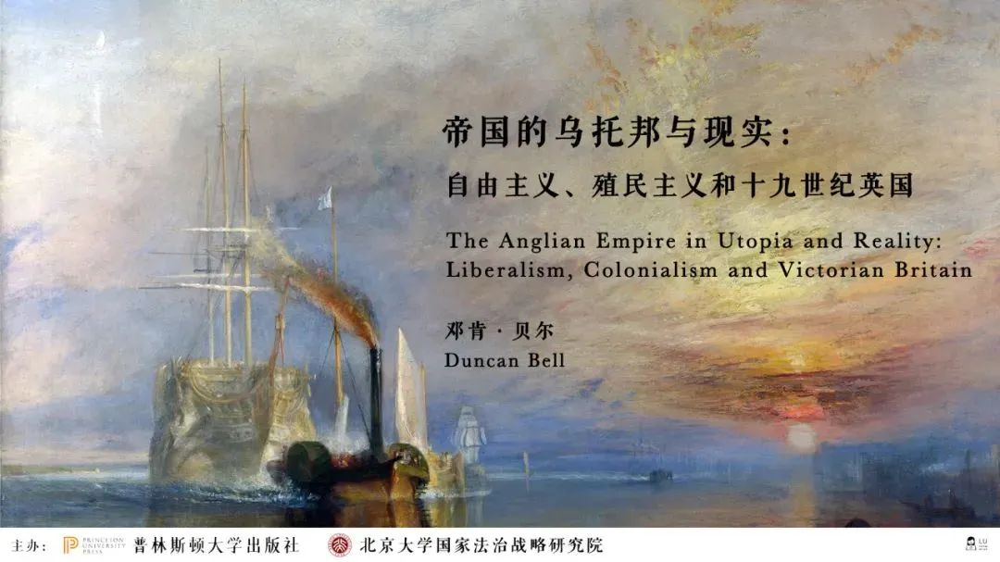
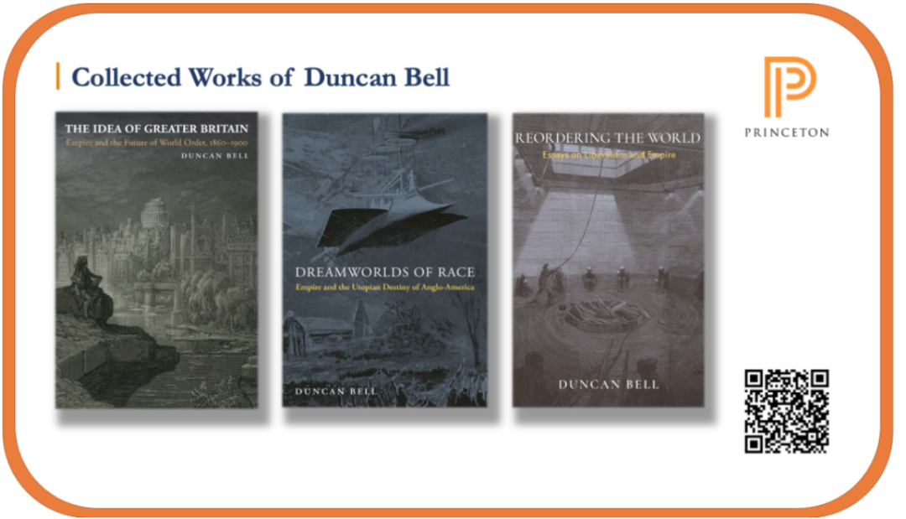
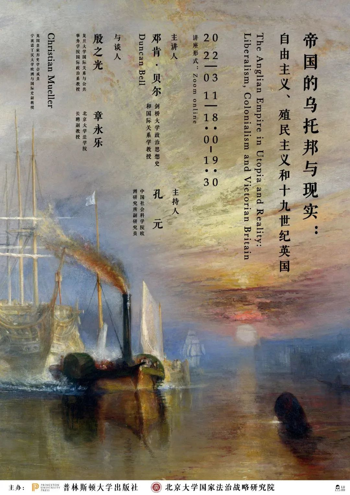

收录于合集
以下文章来源于普林斯顿读书汇 ，作者PUP China
 普林斯顿读书汇 .
普林斯顿读书汇 .
普林斯顿大学出版社 (Princeton University Press) 旗下唯一公众号。自1905年起，PUP已成为全球顶尖学术成果与思想的传播者。关注我们，获取最新英文书摘，领军学者访谈，作者讲座活动。
在普林斯顿读书会上周推送《帝国观念与世界秩序：19世纪英国如何面对霸权衰落危机？》（点击文字阅读）中，我们介绍了剑桥大学教授Duncan Bell教授有关19世纪的帝国史、世界秩序的重组的论述。普林斯顿大学出版社将联合北京大学国家法治战略研究院，邀请Duncan Bell教授与中国学者讨论，并为读者们带来一场线上讲座。此次讲座面向社会开放，读者可点击文末链接线上听会，敬请关注。
讲座主题｜ 帝国的乌托邦与现实：自由主义、殖民主义和19世纪英国
主办方｜ 普林斯顿大学出版社，北京大学国家法治战略研究院
时间｜ 北京时间2022年3月11日18:00-19:30
主讲人｜ 邓肯·贝尔（Duncan Bell）
主持人｜ 孔元
与谈人｜ 殷之光，章永乐，穆正德（Christian Mueller）
讲座语言｜ 英文
参会途径｜ 详情请见文末信息

主讲人
Duncan Bell
邓肯·贝尔（Duncan Bell）是剑桥大学的政治思想史和国际关系学教授，他的研究和教学处于政治理论、思想史和国际关系的交叉点。在过去的几十年里专注于追踪现代英国政治思想史中的帝国理念，特别是定居者殖民主义。相关著作包括 The Idea of Greater Britain: Empire and the Future of World Order, 1860-1900, Reordering the World: Essays on Liberalism and Empire和Dreamworlds of Race: Empire and the Utopian Destiny of Anglo-America 三本关于这个主题的书，以及各种文章和书中的章节。此外还研究过当代政治理论和国际关系中的各种课题。他目前的研究探讨了自19世纪末以来的英美哲学家、科学家和小说家们对人类未来的想象。他正在着手写两本书，一本是关于从达尔文到人工智能的未来思想的通史，另一本是关于威尔斯（H. G. Wells）的社会和政治思想的专著。
与会嘉宾
孔元
中国社会科学院
欧洲研究所副研究员
殷之光
复旦大学
国际关系与公共事务学院教授
章永乐
北京大学
法学院长聘副教授
穆正德
Christian Mueller
英国皇家历史学会成员
宁波诺丁汉大学
欧洲与国际史副教授
帝国的乌托邦与现实
19世纪末的英国和美国处在一个社会集体梦想的时代。成千上万的小说、歌曲、诗歌和布道词从印刷机中流出，重塑着人们关于未来可能性的感知。幻想小说宣扬着改造世界的具体计划，政治评论阐述着梦幻的未来愿景。有关社会、文化生活和人类本身的新概念逐日增加。新兴科技的知识构成了这场思想喧哗的核心。
但同时，乌托邦主义的洋溢立刻促成了对未来全球秩序的辩论。对全球秩序的想象以帝国联合及种族联合的梦想的方式得到了强有力的表达。而在英美大众文化中，乌托邦愿望的来源和主题正是包括大英殖民帝国和美国在内的整个英语世界。英语世界在19世纪早期开始融聚，而到维多利亚时代晚期，它已形成了一个“政治上分裂但文化和经济上统一的跨洲体系”。在19世纪最后几十年里，在英语世界中建立政治统一的雄心激励着各种各样的团体。
点击下图直达本书购买页
本书荣获2007年惠特菲尔德奖
定价：314元
活动价：224元
这些“统一论者”的努力由焦虑与希望的混合之物所推动：他们焦虑的是，如果尽快采取行动，盎格鲁世界将会分裂，致命地削弱其变革世界的潜力，使大英帝国不可避免地走向衰落；他们希望的是，盎格鲁世界的结合将支配世界并引导人类。虽然建立盎格鲁政治共同体的主张主要来自英国，但其倡议者迅速形成了跨越大西洋和覆盖殖民地的广阔网络。
盎格鲁帝国的构想主要存在两种形式。其一将重点置于英国及其在加拿大、澳大利亚、新西兰和南非殖民地的统一；这一主张在“帝国联邦”的标语下展开，在19世纪80年代盛极一时，并且一直到现在都能引起反响。而另一条辩论的轴线则集中在英美关系上，即建立英美盎格鲁帝国的论述。上述两项不同但相关的构想通常被认为是兼容的，虽然二者在应优先考虑哪些问题以及如何协调这些问题上存在很大分歧。英美盎格鲁帝国的一些追随者建议解散大英帝国，并对其余殖民地的权利主张不感兴趣，而许多帝国联邦主义者则将美国视为对英国主导地位的威胁。
点击下图直达本书购买页
本书获2018年圭恰迪尼历史学国际关系著作奖项第二名
定价：245元
活动价：188元
在The Idea of Greater Britain一书中，贝尔教授剖析了帝国联邦的论述。Reordering the World扩展了他对帝国意识形态的论述，强调了自由主义政治思想和定居殖民主义之间错综复杂的关系。而Dreamworlds of Race则转向了有关盎格鲁世界的辩论的另一主轴。外交史和政治史学家们对英国和美国之间的“和解”进行了大量的研究，对塑造二十世纪的这一地缘政治特殊关系的根源展开了探索。文化史学家和文学家勾勒出世纪末跨大西洋的知识世界，描绘了人、图像和文本在大洋两岸间的传播和影响路线。国际关系学者不断回到那个时代，试图解释霸权转移的动因：一个大国将支配权让给了另一个大国，彼此间却没有爆发战争。
Dreamworlds of Race探讨了关于英美统一的一些最具雄心的想法，论述集中在1880年至第一次世界大战期间。在这个动荡的时期，大西洋两岸的无数知识精英——学者、记者、小说家、传教士和政治家——鼓励两个大国之间更紧密的合作乃至政治一体化。他们将坚信盎格鲁萨克逊种族或“讲英语的人们”的优越性，将缜密的地缘政治和经济分析同关于种族命运的高调宣言融为一路。他们思考无法脱离乌托邦的框架：英美两国的联合将开创一个和平与全球公正的时代。
点击下图直达本书购买页
2021年《外交事务》年度好书
2020年跨大西洋学会和哥伦比亚大学图书奖
2020年英国国际研究协会苏珊·斯特兰奇图书奖入围
定价：365元
活动价：292元
这本书的主角是四位杰出人物：安德鲁·卡内基、威廉·斯蒂德（William Thomas Stead）、塞西尔·J·罗德斯和H·G·威尔斯（H. G. Wells），他们是英美一体化最高调、最有影响力的倡导者。他们构成了一个松散的网络，由私人关系、职业关系以及对种族命运的共同信念所维系。
作为世界上最富有的人之一，卡内基在30多年的时间里孜孜不倦地推动英美两国的“重新统一”，他相信“讲英语的民族”，如果在政治上联合起来，可以成为全球工业进步的引擎。罗德斯是那个时代最突出的帝国主义者，他既被诬蔑为狂妄自大的沙文主义者，又被誉为创造世界的巨人，他强烈谴责十八世纪末把美国赶出帝国怀抱的英国政治家们的无能，梦想未来的盎格鲁- 撒克逊政治共同体以美国宪法为基础。威尔斯以他的推理小说和社会预言而闻名，他预言英国和美国将在二十世纪融合在一起，创造一个“新共和国”，统治一个日益失序的星球，为一个普遍的世界国家奠定基础。斯蒂德是是大英帝国最著名的记者，也是美国最畅销的作家之一。他相信上帝会赐予“一个巨大的统一联邦”来拯救人类，他利用自己的编辑才能通过英语世界的媒体网络传播种族天命的福音。他们四人都认为，英美联合将开创一个永久和平的时代。
点击下图直达本书购买页

三本合买可扫码享受更优价格
讲座参与时间与参会方式
2022年3月11日（周五）
下午18:00-19:30（北京时间）
主题演讲：30分钟；
嘉宾讨论：60分钟。
请复制链接到浏览器线上入会
https://pupress.zoom.us/j/92059926035
会议号：920 5992 6035
（会议室将在讲座开始前15分钟开放）

**本文原载于普林斯顿读书会
**
****编辑：郭静远